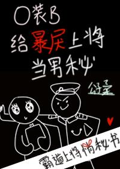

—¡Noticia de última hora! ¡El almirante Lucas del Imperio ha enviado a sus hombres, supuestamente para encontrar a su cita del hotel de anoche!
El reportero, con entusiasmo, preguntó: ¿Qué haría usted una vez que los encuentre?
Los ojos de Lucas brillaron con frialdad: Mátenlos.
La multitud: ???
¿Por qué parece diferente a todos los demás...?
–
La perspectiva de Gong →
No hay nada que el irascible almirante Lucas desprecie más que a los omegas quejicas y molestos de su vida.
¿Una pareja estable? Jamás sucederá en esta vida.
Sin embargo, si se ve obligado a dar más detalles… Prefiere con mucho a la secretaria beta amable y honesta, experta tanto en combate como en el ámbito académico, que pueda prepararle café y combinarle la ropa.
–
La perspectiva de Shou →
Luo Ran es el secretario de Lucas, y el trabajo que realiza es el más inhumano de todo el imperio.
Tiene que estar a merced del superior más quisquilloso que se sienta por encima de él, y por debajo de él, tiene que lidiar con todo el imperio que no se atreve a interactuar con el almirante, los subordinados del almirante, los compañeros de trabajo, los admiradores, etc.
No solo eso, sino que también tiene que ocultar cuidadosamente el hecho de que es un omega, así como su identidad como la "aventura de una noche" del almirante... enfrentándose constantemente a la amenaza inminente de ser asesinado en cualquier momento.
Hasta que un día, accidentalmente entró en celo frente a Lucas, y la dulce y encantadora feromona coincidió exactamente con la feromona de la persona de aquella noche.
Se acabó, ahora mismo lo van a matar.
"Qué valiente eres". Lucas sujetó la nuca de Luo Ran, con el otro brazo rodeándole la cintura mientras sonreía, “Ahora… te voy a matar.”